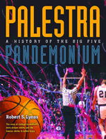

A history of the most famous rivalries in college basketball, fought out in the shrine to the game
A history of the most famous rivalries in college basketball, fought out in the shrine to the game


 A history of the most famous rivalries in college basketball, fought out in the shrine to the game
A history of the most famous rivalries in college basketball, fought out in the shrine to the game

|  |
Palestra PandemoniumA History of the Big 5Robert S. Lyonscloth EAN: 978-1-56639-991-3 (ISBN: 1-56639-991-2) |
"Big 5 fans young and old will delight in Bob Lyons' Palestra Pandemonium: A History of the Big 5, an anecdote-filled, school-by-school journey from 1955 to the present. You name him in Big 5 history, and Lyons, a lifelong Big 5 fan and former La Salle news bureau director, will probably have interviewed him. It's a fabulous read."
—Philadelphia Daily News
The most famous basketball tournament in the history of college basketball is the Big Five. And the Big Five was played in the most hallowed halls of college play: the Palestra. Now, for the first time, a complete story of this Philadelphia rivalry is revealed.
Robert Lyons offers the story of the Big Five from its very beginnings in 1955. At that time, many of the Big Five schools—La Salle University, University of Pennsylvania, St. Joseph's University, Temple University and Villanova University—weren't even talking to each other, and everyone predicted the tournament would end before it began. Conducting interviews with coaches and players—including famed Temple coach Harry Litwack's last interview before his death—Lyons offers the play-by-play on how the Big Five became an institution, and how it was ultimately undone by college basketball's own success.
Lavishly illustrated with photographs of players, teams, coaches, and the Palestra itself, Palestra Pandemonium is an immediate classic, offering a chronicle of the most monumental college basketball tournament. Anywhere.
Excerpt available at www.temple.edu/tempress
Introduction
1. The Field of Dreams
2. Just One Big Happy Family
3. "It Will Never Work!"
4. Hail to the Chief
5. Dr. Ramsay's Hawks Come Marching In
6. Finally Some Respect for the Quakers
7. The Year the Champs Stayed Home
8. The 'Cats Run with the Ball (Defense)
9. The Owls Fly High with Casey & Chaney
10. Another Miracle for St. Joseph's
11. La Salle's Speedy, Lefty, and "Shakespeare"
12. The "Ivies" in the Final Four
13. The 'Cats Reach the Promised Land
14. What Went Wrong?
Acknowledgments
 | Robert S. Lyons (1939-2013) covered professional and college sports for the Associated Press for over thirty years. The former director of the La Salle University News Bureau, editor of La Salle, the university's alumni magazine, and instructor of journalism, advertising, and public relations at La Salle, was also the president of RSL Communications. He lived in the Philadelphia area. |
Sports
General Interest
Philadelphia Region
© 2015 Temple University. All Rights Reserved. This page: http://www.temple.edu/tempress/titles/1622_reg.html.